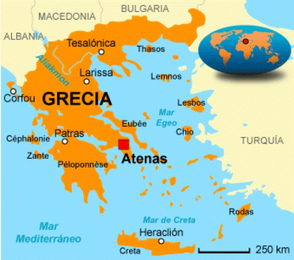

Bem-vindo ao nosso site sobre a Grécia! Aqui você vai iniciar uma viagem incrível por um dos países mais fascinantes do mundo. Nesta jornada, você vai descobrir a cultura grega, cheia de história, mitologia e tradições que influenciaram todo o planeta. Também vai conhecer os principais pontos turísticos, como ilhas paradisíacas, templos históricos e paisagens únicas. Além disso, explorará a culinária grega, famosa por seus sabores marcantes e saudáveis, e entenderá como funciona a economia do país, seus desafios e suas áreas mais importantes. Prepare-se para aprender, se encantar e mergulhar por completo no universo da Grécia!
🌍Geografia e Clima
A Grécia está localizada no sudeste da Europa, na região dos Bálcãs, sendo banhada por três mares:
Mar Jônico, Mar Egeu e Mar Mediterrâneo.
Seu território é muito variado e conhecido por suas paisagens marcantes.
Principais características geográficas:
Território montanhoso → cerca de 80% do país possui montanhas, o que faz da Grécia uma das áreas mais montanhosas da Europa.
Mais de 6.000 ilhas e ilhotas → apenas cerca de 200 são habitadas.
As principais ilhas são Creta, Rodes, Mykonos, Santorini, Corfu e Eubeia.

Verões
Muito quentes, com temperaturas que podem passar de 35°C.
Secos, quase sem chuva.
Bastante sol, ideal para turismo nas ilhas.
Invernos
Temperaturas amenas nas áreas costeiras, geralmente entre 10°C e 15°C.
Mais frios nas áreas montanhosas, com possibilidade de neve.
Chuvosos, especialmente entre novembro e fevereiro.
🌾 A Agricultura na Grécia: Uma Tradição Moldada pelo Clima e pelo Relevo
A agricultura grega sempre foi influenciada pelo clima mediterrâneo e pelo relevo montanhoso, que ocupa cerca de 80% do país. Como há poucas áreas planas, os gregos criaram terraços nas encostas para cultivar em terrenos inclinados.
O clima, com verões secos e invernos chuvosos, favorece a tríade mediterrânea:
oliveiras, videiras e cereais.
A
✨ Curiosidades sobre a Grécia
1. Berço da democracia
A Grécia foi o primeiro país do mundo a criar a democracia, em Atenas, há mais de 2.500 anos.
2. Templos eram pintados
Ao contrário do que vemos hoje, os famosos templos gregos NÃO eram brancos — eles eram todos coloridos, com detalhes em vermelho, azul e dourado.
3. Jogos Olímpicos
Os Jogos Olímpicos tiveram origem na Grécia Antiga, em 776 a.C., como um festival religioso em homenagem a Zeus.
4. O alfabeto grego deu origem a várias letras
Muitas letras e símbolos que usamos hoje vêm do alfabeto grego, como alfa, beta, sigma, ômega etc.